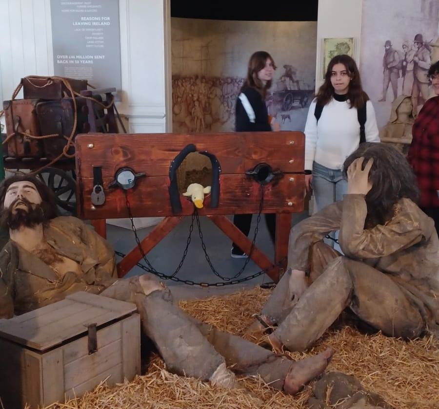

Dans cette rubrique Irlande, vous allez retrouver les détails de ….. ouiiii mon voyage en Irlande wow trop fort.
Alors le premier jour, on a pris le car du Mans à Cherbourg, on s’est bien amusé. Puis on a passé la nuit dans un bateau et on a regardé un film pendant le trajet ! On est arrivés à Cork à midi, pile à l'heure pour l'aventure. On a visité la ville pour enfin dormir chez l’habitant.
Le deuxième jour, on a visité le "Coffin ship", c'était un peu effrayant, j'ai même eu l’occoinsion de dire bonjour à un rat. Naturellement, j'ai été impliqué dans une situation où j’ai volé la récolte d'argent pour les pauvres, mais mon plan a malheureusement échoué et j’ai fini par faire un détour par la case prison (dommage j’avais pas de carte chance ^^). Heureusement, mes coinpétences en évasion étaient à la hauteur et on a pu reprendre notre périple avec un bateau que j’ai réquisitionné. En arrivant à la maison j’ai mangé un Irish Stew.
Après une bonne nuit de sommeil, je suis parti explorer le château de la reine Victoria (château de Ross), c'était tellement grand et impressionnant ! Puis on s'est promenés dans une forêt et on a découvert des coinscades, je me suis dis “wow, trop beau les coinscades”. On a même eu un cours de danse irlandaise, c'était vraiment chouette !

Jour 4 : On est allés au "Cobh heritage centre" et on a visité plein de bateaux. Mais là, on a encore fait une bêtise en prenant un bateau sans permission. On s'est fait attraper et j'ai même été emprisonné et condamné à la guillotine... Mais heureusement, j'ai encore réussi à m'échapper pour embrasser un destin de pirate !
Pour le dernier jour, on a visité l'université de Cork, c'est là que George Boole (tu sais, le gars qui fait des maths, la logique booléenne tout ça tout ça), est devenu le premier professeur (de mathématiques, bien vu Sherlock coin). Ensuite, on a fait la fête dans le bar de l'université. Et on a pris un bateau encore plus grand que le premier ! On a joué à plein de jeux et on s'est éclatés avec mes autres amis peluches. C'était trop bien !